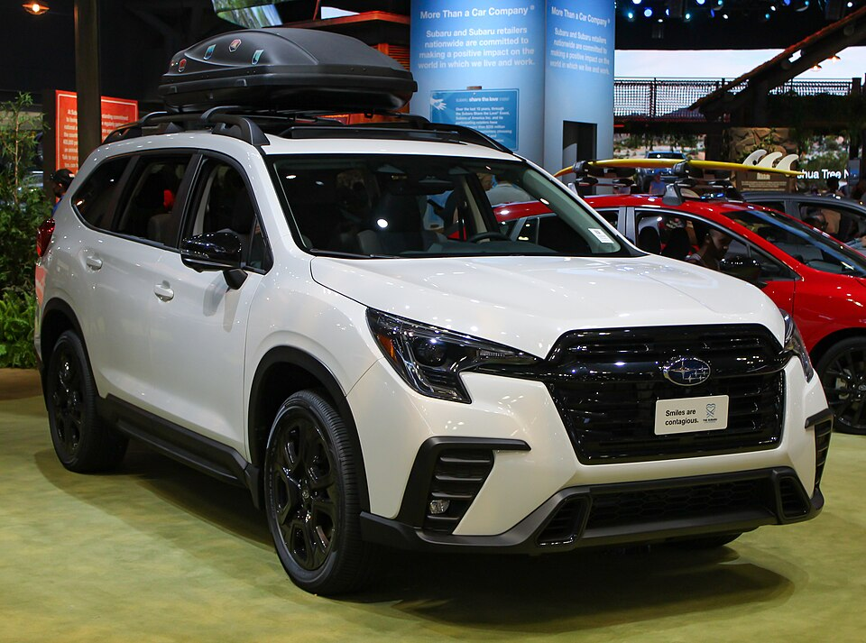
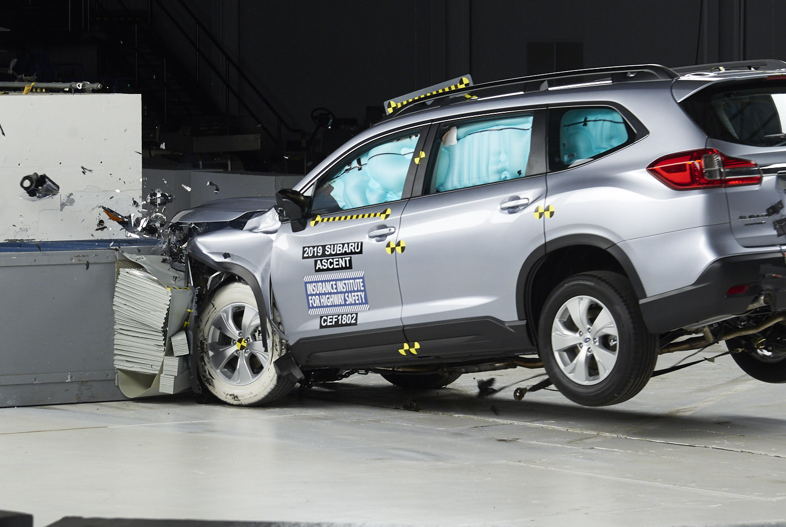

Subaru Ascent — среднеразмерный кроссовер, выпускающийся с 2018 года японской компанией Subaru. На некоторых рынках автомобиль известен как Subaru Evoltis
Изначально Subaru Ascent был представлен в апреле 2017 года в виде концепт-кара на Нью-Йоркском международном автосалоне, где также было объявлено, что сборка будет организована в Лафейетте, штат Индиана. Предсерийный экземпляр был представлен 28 ноября 2017 года на Автосалоне в Лос-Анджелесе.
Производство Subaru Ascent началось в 3 квартале 2018 года. Ascent позиционируется, как самый крупный автомобиль, выпускаемый компанией Subaru. Непосредственным предшественником является Tribeca (ранее — B9 Tribeca), выпуск которого был прекращён после 2014 модельного года.
В Японию модель не поставляется.
Subaru Ascent, выпускаемый на платформе Subaru Global Architecture (SGA), оснащён 2,4-литровым турбированным четырёхцилиндровым оппозитным двигателем FA24 (H4) с прямым впрыском мощностью 194 кВт (260 л. с.) при 5600 об/мин и крутящим моментом 376 Н·м при 2000—4800 об/мин. Привод — полный. Трансмиссия — бесступенчатая (TR690 Lineartronic).
При сложенных задних сиденьях объём грузового отсека Ascent составляет 2450 л. Клиренс составляет 220 мм.

Краш-тест